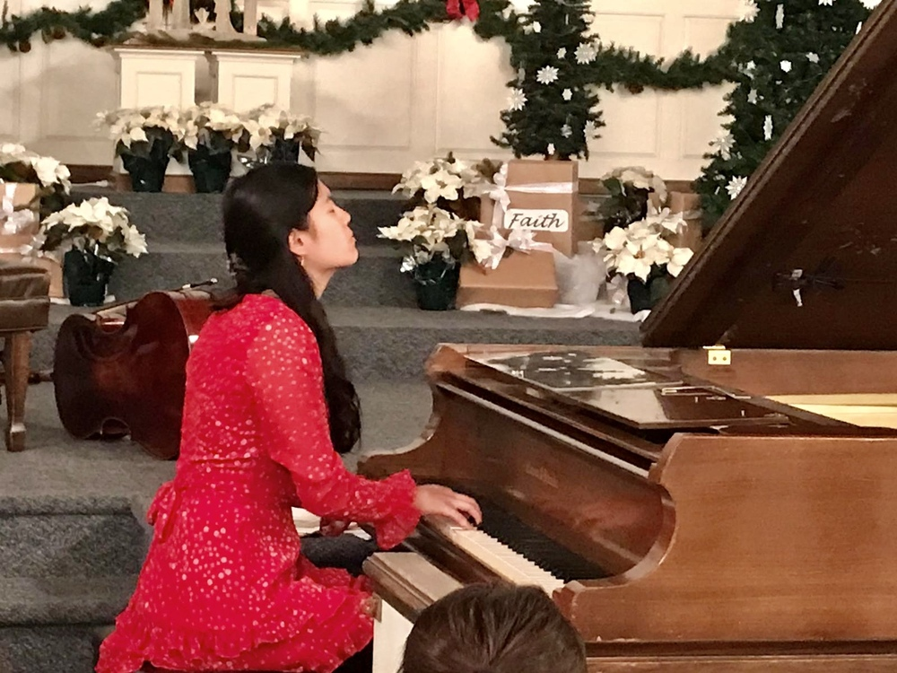
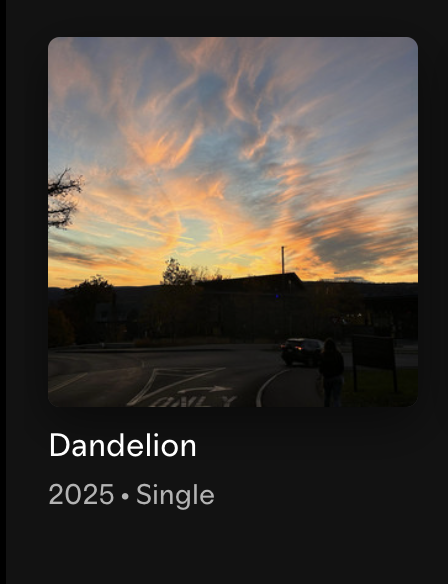

"Music listens when no one does, notes are nets to catch your tears. Melodies paint pictures of what once was, strings revive those golden years. Friends may fall and lovers leave, “forever” may still fall apart. But when you feel the need to grieve, music will soothe your broken heart".
Personal
Creative Interests
From a young age, music has been one of the most important aspects of my life. Whether I am playing a cover of a song I heard in a restaurant, composing an original song, or performing one of Chopin’s nocturnes for my family, piano will always remain one of my greatest joys.

I began composing original music in high school after a music technology class helped me discover how much I enjoyed it.
My first piano solo song, Windows, was writting in the first attempt. It reflects the loneliness felt by many during the COVID-19 pandemic.
Duality captures the story of a person struggling with mental health issues as they navigate a life that is simultaneously the best thing and worst thing ever; they are intermitently the most amazing and most horrible person on the face of the earth, and they coexist with hope and hopelessness.
Dandelion was inspired by Ray Bradbury's famous novel Fahrenheit 451. A man and woman who live in a society devoid of true experiences begin to fall in love, but do not know what to make of it.
I hope to continue learning how to produce music and release more in the future!

To me, poetry is a natural extension of storytelling, and one of the roots behind music. Writing with such unique constraints has given me freedom during many periods of my life.
what remains of us
There was a line I crossed that day The day I left you at the bend It hit me as I walked away And saw the line drawn in the sand Grass and stone and silver stream Lines pattern out mosaic walls Landscapes are not what they seem Both villainous and prosaic falls Across the sand we tripped the light Borders scattered in many grains From dawn of day to break of night We rejoiced in absent chains But beneath fluid crystal sea Lay permanence etched in rock And amid our crossing free I stumbled o’er this cardinal lock A shifting trembled throughout the earth And sand was lost in fault and crack My footprints defaced your self-worth Nothing I did could bring it back And even after the shaking’s quell My heel-print remained carved in stone The bond between us decayed and fell We still danced but now alone A bridge of gold was burned that day A remnant monument of loss And now I take care not to stray Over the line I shouldn’t cross
House Fire
I thought my house was on fire So I pulled on some clothes and slid out of bed And ran downstairs to see only darkness instead I checked all the stoves, the pans and the steel But all I saw were the orange flames that had just seemed so real I thought my house was on fire So I dropped all my files and raced to my car Examined each wire and door left ajar I wondered which of my senses had played this cruel joke For I was still choking on each tendril of smoke I thought my house was on fire So I left my lover alone in the cold I crashed my car on the side of the road I sat on the ground, powerless in my shame And wondered why my friends’ houses were never aflame I thought my house was on fire I barred all the windows and blocked all the doors Threw out the wood and watered the floors For if there was one thing I had learned It was that I did not want anyone else to burn My house is on fire You saw the signs and heard the alarms And ran in and cradled me so gently in your arms But the searing hot fire against my skin is your touch Because sometimes being loved is just too much
Volunteering and Advocacy
Cornell Minds Matter, VP of Outreach
I serve as VP of Outreach for Cornell Minds Matter, a registered student organization dedicated to promoting mental health awareness and reducing the stigma around mental illness on campus. In this role, I lead outreach efforts to connect students with resources, grow our presence across Cornell, and help foster a community where people feel comfortable talking about their mental health. It is work that matters to me personally, and I am proud to help build spaces where students feel supported and seen.
Volunteer & Peer Tutoring
Teaching has always been something that I find very intrinsically fulfilling. Over the years, I have worked as a private tutor across a range of subjects, helping students approach difficult concepts and develop stronger study habits. I also volunteered as a peer tutor through Khan Academy, supporting students preparing for the SAT. As someone who has been fortunate to have had great teachers in the past, I recognize how impactful it is to have someone believe in you and spend time helping you, and it is one of my biggest goals to pass that on to others.
Why It Matters to Me:
Whether I am working with data, leading a consulting project, or mentoring a student, I am motivated by the same thing: I want my work to create a positive impact on others.